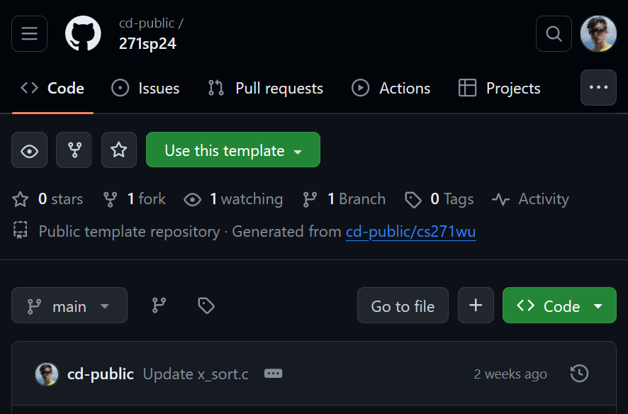

stdio
CS 271
Prof. Calvin
29 Jan 24
w02d00
Today
- hw0 staging
- git required
- gcc required
- stdio
- Printing
Review
- Bash prompts users with a reminder about where they are in the filesystem.
user name @ device name : file system location $ user @ DESKTOP-THMS2PJ : ~ $ - "~" is where you usually start - short hand for the home directory of a given user.
user@DESKTOP-THMS2PJ:~$ mkdir dev user@DESKTOP-THMS2PJ:~$ cd dev user@DESKTOP-THMS2PJ:~/dev$ cd / user@DESKTOP-THMS2PJ:/$ cd /home/user/dev/ user@DESKTOP-THMS2PJ:~/dev$ pwd /home/user/dev user@DESKTOP-THMS2PJ:~/dev$ cd .. user@DESKTOP-THMS2PJ:~$ - These are all paths (file system locations):
- Special: "~" is special bash feature, used to refer to a user's home directory
- Relative path: "dev" it refers to the "dev" folder relative to the current path
- Absolute path"/home/user/dev" refers to one, specific path - from anywhere
- Absolute paths begin with "/" (also called "root"), relative paths do not.
Review
| Command | Action |
|---|---|
gcc |
Given an input .c file, compile the code. |
python3 |
Open the python3 interpreter. Given an input .py file, run that script. |
echo |
Given an input string, print that string. Can be used to write text into a file. |
cat |
Given an input file name, print the contents of that file. For "concatenate" - historically used to join multiple files together, but may be used on a single file. |
cd |
Change directory. If given no argument, return to ~. |
pwd |
Print working directory. Prints the full name of the current location in the file system. |
ls |
List. Lists all files and sub-directories in the current directory. |
Creating your repository
- For this class, you will make your own private repository from the files 271sp24.

- This can be done at command line or is browser, but we'll use browser for now.
- Click "Use this template"
- The url is https://github.com/cd-public/271sp24/
Creating your repository
- You must name your repository 271sp24 (convenience thing for me) - you can change post-semester.
- You must make your repository private.
- DO NOT CREATE A REPOSITORY THAT IS PUBLIC OR HAS ANY OTHER NAME

Add me
- Either click through settings or navigate to .../271sp24/settings/access
- "Add people"
- Add "cd-public" (that's me).

Add me
- Add "cd-public" (that's me).
- Once you send me an invite, send me an email from your @wu to my @wu telling me what you GitHub name is so I can put it in a spreadsheet.

FAQ
- I already forked 271sp24
- Delete and make a private repo (for portfolio reasons).
- I want to/did name it something else.
- Remake or rename. Grading is scripted. Following instructions is graded.
- It's not private.
- Google/Stack Overflow. You can toggle privacy for debug.
- I can't add you.
- Google/Stack Overflow
- How will you know it's me?
- You will email my @wu from your @wu with the repository name/link.
- How do I know it works?
- Change README and check.
- When I try to commit to README, my password won't show up.
- Correct.
- Snipped because these're questions covered last class - check the slides.
Once you commit a trivial change to this README, you have complete git setup.
- You may have to set up again if you set up in an environment with gcc support.
For hw0 you have to write some C.
- Once you have your own 271sp24, you should be able to compile the hw0 starting file "x_sort.c"
user@DESKTOP-THMS2PJ:~/dev/as_zagreb/271sp24/hw0$ gcc x_sort.c user@DESKTOP-THMS2PJ:~/dev/as_zagreb/271sp24/hw0$ ./a.out hello Keep it up! user@DESKTOP-THMS2PJ:~/dev/as_zagreb/271sp24/hw0$ - It will provide you the minimal non-zero feedback that you are not done yet ("Keep it up!").
- You will do your work for hw0 inside the "sort" function x_sort.c... but first some background.
Hello World
- New language, new hello.
- In notes or in hw0, let's make and play with a new .c file.
user@DESKTOP-THMS2PJ:~/dev/as_zagreb/271sp24/hw0$ touch test.c user@DESKTOP-THMS2PJ:~/dev/as_zagreb/271sp24/hw0$ - On Mac probably use atom or nano to edit.
user@DESKTOP-THMS2PJ:~/dev/as_zagreb/271sp24/hw0$ nano test.c user@DESKTOP-THMS2PJ:~/dev/as_zagreb/271sp24/hw0$ - On PC probably use (and set up) VS Code.
user@DESKTOP-THMS2PJ:~/dev/as_zagreb/271sp24/hw0$ code . user@DESKTOP-THMS2PJ:~/dev/as_zagreb/271sp24/hw0$ - On Linux I use gedit, but if you're on Linux you're also on your own.
- vim isn't required, but it'd be a lot funnier if it were.
Boilerplate
- As a starting C coder, I recommend starting *every* C project with following elements.
- You can treat this as boilerplate, but I will also tell you what it all means.
- When opening a new file, write:
// This test.c, a file for testing C. (or another description) #include <stdio.h> int main() { printf("test\n") ; return 0 ; }
Comments
- C, or more properly C99 (C standard revision 1999) has two main kinds of comments:
- Single line comments, that preface with double slashes "//"
- Multiline comments, that are prefaced and punctuated with "/*" and "*/ respectively.
int x = 0, y = 0, z = 0 ; x = 10 ; // x = 20 ; printf("%d", x) ; // Prints "10" y = 20 ; /* z = x * y ; x = x * z ; y = y * z ; */ printf("%d", y) ; // Prints "20"It is good practice to end every line of code you write with a "//" comment until you write code with no bugs on the first try at P > .5.
#include
- Read more.
- gcc and to my knowledge all C compilers utilize a "preprocessor" that runs over a .c file before attempting compilation.
- Lines of "code" prefixed with "#" are not C code specifically, but part of the C coding environment
- Conceptually somewhere between actual honest-to-goodness C and bash in terms of how "C" it is.
- The "#include" preprocessor directive instructors the compiler to include code from other sources while compiling, in such as the <stdio.h> library.
- Latter in the semester, we will use "#include" to make multi-file programs.
<stdio.h>
- The C print statement, "printf", is defined in <stdio.h>
- (Read: "Standard I/O" or "Standard Input/Output")
- If you don't include <stdio.h> but use printf, you will get this warning.
user@DESKTOP-THMS2PJ:~/dev/as_zagreb/271sp24/notes$ gcc test.c test.c: In function ‘main’: test.c:6:9: warning: implicit declaration of function ‘printf’ [-Wimplicit-function-declaration] 6 | printf("test\n") ; | ^~~~~~ test.c:1:1: note: include ‘<stdio.h>’ or provide a declaration of ‘printf’ +++ |+#include <stdio.h> 1 | // This test.c, a file for testing C. (or another description) test.c:6:9: warning: incompatible implicit declaration of built-in function ‘printf’ [-Wbuiltin-declaration-mismatch] 6 | printf("test\n") ; | ^~~~~~ test.c:6:9: note: include ‘<stdio.h>’ or provide a declaration of ‘printf’ user@DESKTOP-THMS2PJ:~/dev/as_zagreb/271sp24/notes$I will receive an alarming number of Discord messages containing warnings similar to this one. That is okay, but...
Let gcc help you
- Ahem
- As you were
user@DESKTOP-THMS2PJ:~/dev/as_zagreb/271sp24/notes$ gcc test.c
test.c: In function ‘main’:
test.c:6:9: warning: implicit declaration of function ‘printf’ [-Wimplicit-function-declaration]
6 | printf("test\n") ;
| ^~~~~~
test.c:1:1: note: include ‘<stdio.h>’ or provide a declaration of ‘printf’
+++ |+#include <stdio.h>
1 | // This test.c, a file for testing C. (or another description)
test.c:6:9: warning: incompatible implicit declaration of built-in function ‘printf’ [-Wbuiltin-declaration-mismatch]
6 | printf("test\n") ;
| ^~~~~~
test.c:6:9: note: include ‘<stdio.h>’ or provide a declaration of ‘printf’
user@DESKTOP-THMS2PJ:~/dev/as_zagreb/271sp24/notes$
gcc explicitly tells you what code to write and where. It is helping you!
Warnings
- Of note, these messages are warnings and not errors.
test.c:6:9: warning: implicit declaration of function ‘printf’ [-Wimplicit-function-declaration] 6 | printf("test\n") ; | ^~~~~~ - Code with warnings but no errors will compile, but may behave unpredictably or erratically.
- Code with errors will not compile and a new file to run, such as a.out, will not be created.
- You will compile code, get an error, ignore the error, and run an older version of your code and then become confused.
- You will ask for help and I or someone else will link this slide.
- Prove me wrong.
Implicit function declaration.
- Of note, these messages are warnings and not errors.
test.c:6:9: warning: implicit declaration of function ‘printf’ [-Wimplicit-function-declaration] 6 | printf("test\n") ; | ^~~~~~ - An "implicit function" declaration occurs when you call a function that you have not written or included.
- Review: What does it mean to call a function?
- The gcc "-w" flag will direct gcc not to print warnings.
- As a new programmer, you should aim to write code with no warnings or errors.
- You should use "-w" only as a tool to focus on errors before fixing warnings.
- Do not submit code to be graded with errors or warnings. Instead, reduce the scope of the code until you can do what you are trying to do without any errors or warnings.
Boilerplate
- As a starting C coder, I recommend starting *every* C project with following elements.
- You can treat this as boilerplate, but I will also tell you what it all means.
- When opening a new file, write:
// This test.c, a file for testing C. (or another description) #include <stdio.h> // for printf int main() { printf("test\n") ; return 0 ; }
main()
- Recall: C is not a programming language.
- By default, lines of C code are not run unless called.
- The C compiler looks for a function named exactly main, and produces an executable (a program) that calls this function.
- The only code in a C file that runs is main(), and the code it calls.
- Test this: Write C code with no main().
// This test.c, a file for testing C. (or another description) #include <stdio.h> // for printf int notmain() { printf("test\n") ; return 0 ; }
main()
- No main no gain.
user@DESKTOP-THMS2PJ:~/dev/as_zagreb/271sp24/notes$ gcc test.c /usr/bin/ld: /usr/lib/gcc/x86_64-linux-gnu/11/../../../x86_64-linux-gnu/Scrt1.o: in function `_start': (.text+0x1b): undefined reference to `main' collect2: error: ld returned 1 exit status - As in you do not gain an a.out.
user@DESKTOP-THMS2PJ:~/dev/as_zagreb/271sp24/notes$ ls test.c user@DESKTOP-THMS2PJ:~/dev/as_zagreb/271sp24/notes$ - Note: That is error. Not a warning.
- Review: What is the difference between errors and warnings?
- Review: "ld" is two characters... what does that tell us about the history of "ld"?
main()
- You can also try writing lines of C with no enclosing function.
#include <stdio.h> // for printf printf("test\n") ; - This is fine in Python (this would be a script) but this does not constitute a program.
user@DESKTOP-THMS2PJ:~/dev/as_zagreb/271sp24/notes$ gcc test.c test.c:3:8: error: expected declaration specifiers or ‘...’ before string constant 3 | printf("test\n") ; | ^~~~~~~~ user@DESKTOP-THMS2PJ:~/dev/as_zagreb/271sp24/notes$ - Note: That is error. Not a warning.
int main()
- You can give main return types other than int.
user@DESKTOP-THMS2PJ:~/dev/as_zagreb/271sp24/notes$ echo "int main() {return 0;}" >test.c && gcc test.c && ./a.out user@DESKTOP-THMS2PJ:~/dev/as_zagreb/271sp24/notes$ echo "void main() {return;}" >test.c && gcc test.c && ./a.out user@DESKTOP-THMS2PJ:~/dev/as_zagreb/271sp24/notes$ echo "char *main() {return \"hi\";}" >test.c && gcc test.c && ./a.out user@DESKTOP-THMS2PJ:~/dev/as_zagreb/271sp24/notes$ echo "string main() {return 0;}" >test.c && gcc test.c && ./a.out test.c:1:1: error: unknown type name ‘string’ 1 | string main() {return 0;} | ^~~~~~ user@DESKTOP-THMS2PJ:~/dev/as_zagreb/271sp24/notes$ - Use "&&" to run multiple commands or utilities in a single line.
int main()
- We use int main() and int main() only because C++ requires int main() and you might want to
user@DESKTOP-THMS2PJ:~/dev/as_zagreb/271sp24/notes$ echo "int main() {return 0;}" >test.c && g++ test.c && ./a.out user@DESKTOP-THMS2PJ:~/dev/as_zagreb/271sp24/notes$ echo "void main() {return;}" >test.c && g++ test.c && ./a.out test.c:1:1: error: ‘::main’ must return ‘int’ 1 | void main() {return;} | ^~~~ test.c: In function ‘int main()’: test.c:1:14: error: return-statement with no value, in function returning ‘int’ [-fpermissive] 1 | void main() {return;} | ^~~~~~ user@DESKTOP-THMS2PJ:~/dev/as_zagreb/271sp24/notes$ - That's right, by using g++ instead of gcc you now know C++ (well you don't know C, but you will).
return 0 ;
- Remember this?
user@DESKTOP-THMS2PJ:~/dev/as_zagreb/271sp24/notes$ gcc test.c /usr/bin/ld: /usr/lib/gcc/x86_64-linux-gnu/11/../../../x86_64-linux-gnu/Scrt1.o: in function `_start': (.text+0x1b): undefined reference to `main' collect2: error: ld returned 1 exit status - "error: ld returned 1 exit status"
- Historically, return values from executables other than 0 have denoted error conditions.
- Return 0 from your executables for compatability with other code respecting this convention.
exit(1) ;
- You do not need to know this yet, but you may look back at these slides.
- This is how you return with 1 exit status:
#include <stdio.h> // for printf #include <stdlib.h> // for exit int main() { if (0) { exit(1) ; } printf("test\n") ; return 0 ; } - This will be useful at some point this semester (network programming).
Boilerplate
- As a starting C coder, I recommend starting *every* C project with following elements.
- You can treat this as boilerplate, but I will also tell you what it all means.
- When opening a new file, write:
// This test.c, a file for testing C. (or another description) #include <stdio.h> // for printf int main() { printf("test\n") ; return 0 ; }
printf
- The built-in C print function is a format print function.
- Note: C printf() does not have a built-in newline - Python print() does!
- This exists in Python but is relatively unpopular as far as I've seen:
txt = "For only {price:.2f} dollars!" print(txt.format(price = 49)) - That's a w3 rip because I have never actually written a line of Python code in my life.
- Here's what it looks like with no formatting elements applied:
>>> txt = "hello there" >>> print(txt.format()) hello there >>> print("hello there".format()) hello there >>> - That's basically printf("hi") - a format print with no formatting.
printf
- Here's a non-trivial format print.
- This exists in Python but is relatively unpopular as far as I've seen:
#include <stdio.h> // for printf int main() { int rval = 0 ; // for "return value" printf("rval = %d\n", rval) ; return rval ; } - "d" here stands for decimal, which is for integers printed in base 10.
- Usually you'll use %d for numerical data, but not always.
user@DESKTOP-THMS2PJ:~/dev/as_zagreb/271sp24/notes$ gcc test.c && ./a.out rval = 0 user@DESKTOP-THMS2PJ:~/dev/as_zagreb/271sp24/notes$ - Most of the Python format tech you know will apply either directly or via Stack Overflow/ChatGPT translation.
Boilerplate
- As a starting C coder, I recommend starting *every* C project with following elements.
- You can treat this as boilerplate, but I will also tell you what it all means.
- When opening a new file, write:
// This test.c, a file for testing C. (or another description) #include <stdio.h> // for printf int main() { printf("test\n") ; return 0 ; } - Easy right? Moving on.
Today
- ✓ hw0 staging
- ✓ git required
- ✓ gcc required
- ✓ stdio
- ✓ Printing